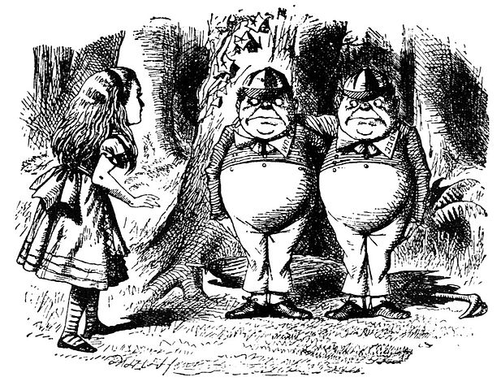

 John Tenniel, “The Mad Hatter”
Arguments are attempts to persuade other people that they should accept the claims that we are making. Because argumentation is a method of persuasion it may seem at first glance to be similar to rhetoric, also known as “the art of persuasion.” People who study and practice rhetoric often claim that rational argument is just one among many different methods of persuasion, appropriate at specific times, but not fundamentally different than other methods. That is, they claim that argument is a form of rhetoric. Philosophers, on the other hand, would like to insist on the basic difference between the two. Philosophers call attention to the fact that in rhetoric:
Appeal is made to our emotions, prejudices, fears, hopes, etc. That is, who we are and what we feel about things matters. This is both its strength and its weakness.
Because of this, the persuasion that rhetoric produces doesn’t last, once our feelings change, we are no longer convinced, and our feelings are constantly changing.
In rational argument, on the other hand:
Appeal is made not to our emotions but to our ability to reason.
Since everyone is equally capable of reasoning, this means that arguments do not appeal to us personally. It doesn’t matter who you are, a good argument should convince you.